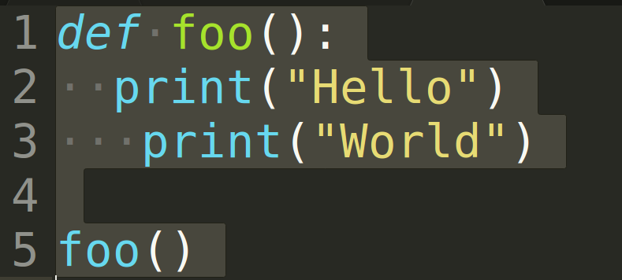
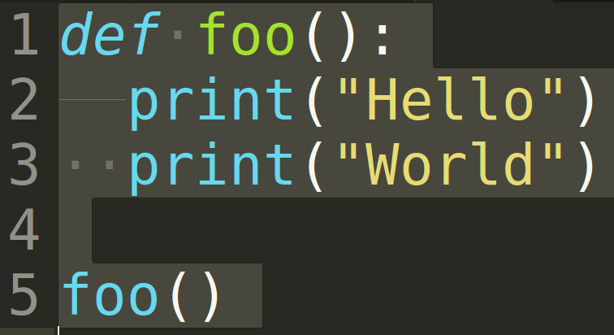
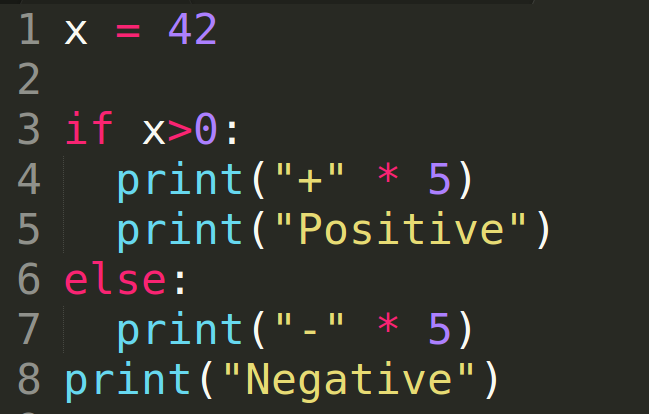
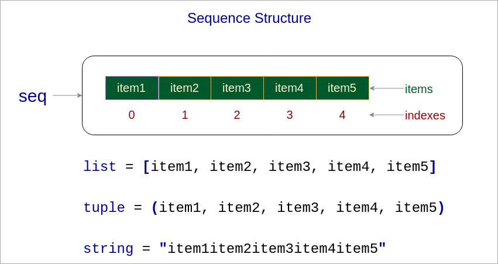
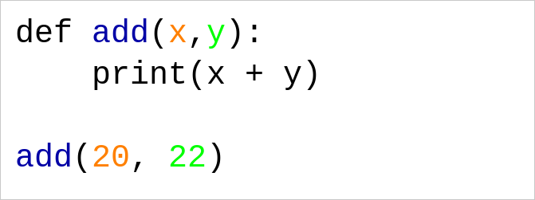
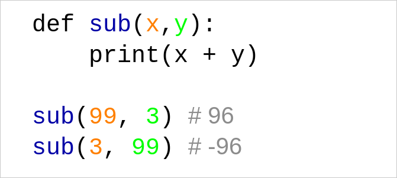

Keyboard shortcuts:
N/SpaceNext Slide
PPrevious Slide
OSlides Overview
ctrl+left clickZoom Element
If you want print version => add '
?print-pdf' at the end of slides URL (remove '#' fragment) and then print.
Like: https://ProgressBG-ChatGPT_and_ML-course.github.io/...CourseIntro.html?print-pdf
Основи на програмирането с Python
Created for
Iva E. Popova, 2016-2025,

Запознаване с Python
Въведение
- Python е един от най-популярните езици за програмиране, особено в областите:
- Наука за данните (Data Science)
- Машинно обучение (Machine Learning)
- Уеб разработка (Web Development)
- Защо Python?
- Прост и четлив синтаксис: Прилича на естествен английски език, което го прави лесен за научаване от начинаещи.
- Огромна общност и библиотеки: Има хиляди готови инструменти (библиотеки) за почти всяка задача.
- Гъвкавост: Може да се използва за различни цели - от малки скриптове до големи корпоративни системи.

picture source: @imgur.com
from If programming languages were essays...
{kind=link}
Какво съдържа една Python програма
- Програмата представлява набор от инструкции, които компютърът изпълнява.
- В Python всяка инструкция се записва на нов ред.
- Инструкции, които изпълняват една обща задача, се отделят като
блок. - В Python блокът не се огражда с фигурни скоби, както в други езици, а се определя чрез еднакво отстъпване на инструкциите в него.
Чист синтаксис
- Инструкциите приключват с EOL (нов ред), а не със запетайка!
- Все пак може да използвате запетаи, ако желаете
- Блокът от инструкции се определя чрез еднакво отстъпване, а не чрез фигурни скоби
- Може да използвате интервали или табулации за отстъп.
- Смесването на интервали и табулации може да доведе до грешки или бъгове.
Python синтаксис vs JavaScript синтаксис (демо)
- И двата примера решават една и съща задача: намиране на сумата и произведението на масив
numbers = [1, 2, 3, 4]
product = 1
for i in numbers:
product *= i
total = sum(numbers)
print(total, product)
var numbers = [1, 2, 3, 4],
total = 0,
product = 1;
for (i = 0; i < numbers.length; i += 1) {
total += numbers[i];
product *= numbers[i];
}
console.log(total, product)
- Още примери за сравнение между Python и други езици можете да намерите в: rosettacode.org
Еднакъв отстъп!
{kind=link}
Този код ще доведе до IndentationError, тъй като инструкциите в блока не са с еднакъв отстъп!п
Не смесвайте интервали и табулации
{kind=link}
Този код ще доведе до IndentationError, тъй като подравняването е със таб и спейсове.
Грешният отстъп може да причини бъгове!
{kind=link}
Можете ли да откриете бъга?
Типове данни. Променливи. Оператори.
Типове данни. Променливи. Оператори.
Basic data types
int(Integer)- Цели числа (без десетична част). Пример:
42,-5 float- Числа с десетична запетая. Пример:
3.14,1.0 str(String)- Текст, ограден в кавички. Пример:
"Hello World!",'Python' bool(Boolean)- Логическа стойност:
True(вярно) илиFalse(грешно). - Примери:
-
whole_number = 10 decimal_number = 2.5 print(type(whole_number)) # <class 'int'> print(type(decimal_number)) # <class 'float'>
Variables
- Променливи
- Именувано място в паметта, което съхранява стойност.
- Пример за представяне променливите и данните в паметта
x = 99
y = 3.141516
first_name = "ada"
sur_name = "byron"
num_list = [1,2,3,4,5]

Правила за именуване на променливи
- Могат да съдържат само букви (a-z, A-Z), цифри (0-9) и долна черта (_)
- Не могат да започват с цифра
- Не могат да съдържат интервали или специални символи (напр. !, @, #, $, %, ^, &, *, (, ), -, +, =, {, }, [, ], |, \, :, ;, ", ',/)
- Не могат да бъдат запазени думи (keywords) в Python (напр.
if,else,while,for,def,class) - Препоръки:
- Използвайте описателни имена (напр.
age,total_price) - Използвайте долна черта (_) за разделяне на думи (напр.
first_name) - Избягвайте прекалено кратки имена (напр.
x,a) освен в контексти като цикли или кратки функции.
Operators
- Аритметични Оператори
+,-,*,/(основни),**(степенуване),%(остатък).- Сравнителни Оператори
==(равно),!=(не е равно),>,<,>=,<=.- Пример:
x = 5
y = 3
is_equal = (x == y) # False
is_true = (x > 0 and y < 10) # True
Интерполация на низове (f-strings)
- Python 3.6 добавя „f-strings“ - начин да вложим изрази директно в низове чрез минимален синтаксис
- Повече за f-strings:
- Formatted String Literals @python tutorial
- Format String Syntax @python docs
value = 42
# str.format() метод:
'Стойността е {}.'.format(value)
# f-strings:
f'Стойността е {value}'
Примери
user_name = input("hi, what's your name: ")
user_surname = input("will you tell me your sur name?:")
print(f"Nice to meet you, {user_name} {user_surname} !")
Условни Оператори
Условни Оператори
Conditional Statements (if, elif, else)
- Употреба
- Позволяват изпълнението на код да зависи от дадено условие.
- Пример
-
temperature = 25 if temperature > 30: print("Hot") elif temperature > 20: print("Ideal") # Executes else: print("Cold")
Цикли
Loops
Цикли (for, while)
forцикъл- Повтаря се за всеки елемент в дадена последователност (напр. списък).
whileцикъл- Повтаря се, докато дадено условие е вярно (
True). - Пример (
for): -
fruits = ["apple", "banana"] for fruit in fruits: print(f"I like {fruit}.")
Структури от Данни (Колекции)
Sequences: list и tupple
Sequence data types: lists and tupple
list(Списък)- Подредена, променлива колекция от елементи. Пример:
[1, "a", True] tuple(Кортеж)- Подредена, непроменлива колекция. Пример:
(1, "a", True) - Позицията на елемент в последователността се нарича индекс.
- Индексите започват от 0. 
- Всички последователни типове данни в Python поддържат общ набор от операции.
length, indexing, slicing, concatenation,.
repetition, membership test, min, max, count, index- Всеки тип последователност има и собствени методи за по-специфични операции.
{kind=link}
Примери
- Достъпване на елементите чрез индексиране
# list и tupple : достъпване на елементите по индекс
my_list = [10, 20, 30, 40, 50]
my_tuple = (10, 20, 30, 40, 50)
print("List element at index 2:", my_list[2]) # Извежда 30
print("Tuple element at index 2:", my_tuple[2]) # Извежда 30
# Промяна на елемент в list
my_list[2] = 99
print("Modified list:", my_list) # Извежда [10, 20, 99, 40, 50]
# Опит за промяна на елемент в tupple (ще доведе до грешка)
# my_tuple[2] = 99 # Това ще предизвика TypeError, защото tupple е неизменяем
Цикъл върху списък
- Пример:
fruits = ["ябълка", "банан", "портокал", "круша"] for fruit in fruits: print(fruit)
Речник (dictioanry)
Dictionaries
dict(Речник)- Неподредена колекция от двойки ключ:стойност. Пример:
{"name": "Ivan", "age": 30} - Достъп до стойности чрез ключове
- Можете да получите стойността, свързана с определен ключ, като използвате квадратни скоби:
my_dict = {"name": "Ivan", "age": 30}
print(my_dict["name"]) # Извежда "Ivan"
Примери за работа с речници
- Създаване на речник
- Достъп до стойности чрез ключове
- Добавяне или промяна на елементи
- Премахване на елементи
person = {
"name": "Alice",
"age": 28,
"city": "New York"
}
print(person["name"]) # Извежда "Alice"
person["age"] = 29 # Промяна на съществуващ ключ
person["profession"] = "Engineer" # Добавяне на нов ключ
del person["city"] # Премахване на ключ "city"
Цикъл върху речници
- Примери:
clients = {"Иван": 25, "Мария": 30, "Петър": 22} # цикъл върху ключовете for name in clients.keys(): print(name) # цикъл върху стойностите for age in clients.values(): print(age) # цикъл върху ключ, стойност for name, age in clients.items(): print(name, age)
Функции в Python
Какво са функциите?
- Функцията е именуван блок от инструкции (т.е. поредица от команди), който изпълнява една концептуална задача.
- Типичен пример за функция в реалния живот е рецепта в готварска книга.
- Инструкциите във функцията се изпълняват само след като функцията бъде извикана.
- Функциите ни помагат да организираме кода си (разделят задача на подзадачи).
def task_1():
pass
def task_2():
pass
...
def task_n():
pass
Дефиниция на функция
Function Definition
def function_name(param_list):
'''docstring'''
statements
return [expression]
- def
- Ключова дума, която започва дефиницията на функцията
- function_name
- Трябва да бъде валидно име на променлива.
- param_list
- Опционално. Списък с параметри на функцията. Скобите са задължителни, дори ако списъкът е празен.
- '''docstring'''
- Опционално. Стринг за документация на функцията.
- statements
- Блок от инструкции, наричан още тяло на функцията. Трябва да съдържа поне една инструкция.
- return [expression]
- Опционално. Определя стойността, която функцията ще върне.
Най-прост пример
def greet():
"""Просто отпечатва 'Hello'"""
print("Hello!")
- Забележка: този код няма да отпечата нищо, ако го стартирате директно
- Това е само дефиницията на функцията
- За да се изпълнят инструкциите в нея, функцията трябва да бъде извикана!
Извикване на функция (синоним: Изпълнение на функция)
Function call/execution
- Инструкциите в тялото на функцията се изпълняват само когато функцията бъде извикана:
- opt_arg_list е опционален, но скобите са задължителни
- Забележка: скобите след името на функцията са задължителни!
function_name(opt_arg_list)
### дефинираме функцията greet()
def greet():
"""Просто отпечатва 'Hello'"""
print("Hello!")
### извикваме функцията greet():
greet()
- Функцията трябва да бъде дефинирана преди да бъде извикана, иначе ще се получи NameError!
- Извикване на функция - правилният начин:
# извикваме функцията greet():
greet()
# дефинираме функцията greet():
def greet():
print("Hello!")
# NameError: name 'greet' is not defined
# дефинираме функцията greet():
def greet():
print("Hello!")
# извикваме функцията greet():
greet()
# Hello!
Function Parameters
- Функцията не е много полезна, ако работи само със същите стойности
- По-добре би било да можем да направим:
def add():
print(2+3)
add()
add()
add()
# 5
# 5
# 5
# извикване на add с различни аргументи:
add(20, 22)
add(123, 321)
add(16, 10)
# ЖЕЛАН ИЗХОД:
# 42
# 444
# 26
- Параметрите са локални променливи на функцията, които получават стойности, когато функцията бъде извикана с конкретни аргументи. 
- Можете да дефинирате функция с параметри, като ги изброите в скобите.
- Имената на параметрите трябва да са валидни имена на променливи.
- При извикване на функцията, в скобите се задават стойностите на съответните параметри (наречени аргументи).
{kind=link}
Positional Arguments
- Преминаването на стойности на аргументи към параметрите може да се извърши по позиция. В този случай говорим за позиционни аргументи/параметри:
- първият параметър получава стойността на първия аргумент
- вторият параметър - стойността на втория аргумент
- и така нататък... 
{kind=link}
Positional Arguments
- Броят на предадените аргументи трябва да е равен на броя на параметрите!
def sub(x,y):
""" изважда y от x и отпечатва резултата """
print(x - y)
sub(99)
# TypeError: sub() missing 1 required positional argument: 'y'
sub(99, 3, 3)
# TypeError: sub() takes 2 positional arguments but 3 were given
Default Parameter Values
- Може да се зададе стойност по подразбиране на параметрите, която ще се използва, ако не е подаден аргумент за този параметър.
def greet(name="Nobody"):
""" поздравява потребителя """
print("Hello", name)
greet("Maria")
greet()
# Hello Maria
# Hello Nobody
Default Parameter Values
Параметрите със стойности по подразбиране трябва да следват тези без стойности по подразбиране!
def greet(msg="Hi", name):
print(f"{msg} {name}!")
greet("Maria")
# SyntaxError: non-default argument follows default argument
def greet(name, msg="Hi"):
print(f"{msg} {name}!")
greet("Maria")
# Hi Maria!
Keyword Arguments
- Ако изрично зададете името на параметъра в списъка с аргументи, този параметър ще получи стойността си, независимо от позицията му.
def greet(msg, name):
print(f"{msg} {name}!")
greet(name="Maria", msg="Hi")
Keyword Arguments
Именованите аргументи трябва да следват позиционните!
def greet(msg, name):
print(f"{msg} {name}!")
greet(name="Maria", "Hi")
# SyntaxError: positional argument follows keyword argument
Function Return value
Function Return value
- Функциите в Python могат да връщат стойности чрез инструкцията
return:
def f():
statements
return [expression]
def add(x,y):
return x+y
print(add(2,4)**2)
# 36
Инструкцията return прекъсва функцията! Всякакъв код след return няма да бъде изпълнен:
def add(x,y):
return x+y
# следващият ред никога няма да се изпълни:
print("След return")
print(add(2,4))
Пример
def is_even(n):
""" връща True, ако n е четно, иначе False """
if n % 2 == 0:
return True
else:
return False
print(is_even(4)) # True
print(is_even(7)) # False
Област на видимост и пространства от имена
Scope and namespace
- Пространство от имена (namespace) съхранява съответствието между имена (променливи) и обекти. Обикновено се реализира вътрешно като речник.
- Област на видимост (scope) е лексикална (текстова) зона на програмата, където пространството от имена е директно достъпно (т.е. без префикс).
- Можете да мислите за областта на видимост като част от програмата, където променлива може да бъде достъпвана (използвана, видима).
{kind=link}
Local Scope
- Имената, създадени вътре във функция, са локални за функцията и са видими само вътре в нея.
- Параметрите на функцията също са дефинирани в локалното пространство от имена на функцията. Т.е. те са локални за тази функция.
def f1():
y = 2
print(f"y = {y} във f1")
f1()
# y = 2 във f1
print(f"y = {y} извън f1")
# NameError: name 'y' is not defined
Global Scope
- Име, дефинирано извън функции, е глобално и може да бъде достъпвано от всяко място в този файл след неговата дефиниция.
x = 10
def foo():
print("x = {} във foo()".format(x))
foo()
# x = 10 във foo()
print("x = {} извън foo()".format(x))
# x = 10 извън foo()
Names resolution
- Когато на име се присвоява стойност вътре в тялото на функция, това име се създава в локалната област на функцията, дори ако същото име вече съществува в глобалната област.
x = 1
def foo():
x = 99
print(f"x = {x} във foo")
foo()
# x = 99 във foo
print(f"x = {x} извън foo")
# x = 1 извън foo
Променливи със едно и също име, дефинирани в различни области на видимост, се считат за различни променливи!
Използване на вградени модули/библиотеки
Използване на вградени модули/библиотеки
Modules in Python
- Модул
- Файл с Python код, който съдържа функции, класове и променливи, които могат да бъдат използвани в други програми.
- Библиотека
- Колекция от модули, които предоставят готова функционалност.
- Python има богата стандартна библиотека с вградени модули.
Импортиране на модули (import)
- Синтаксис
- Пример за импорт на модула
math: - Импортиране на конкретни имена от модул:
- Импортиране с псевдоним:
import име_на_модул
import math
print(math.pi) # Извежда 3.141592653589793
print(math.sqrt(16)) # Извежда 4.0
from math import sqrt, pi
print(pi) # Извежда 3.141592653589793
print(sqrt(25)) # Извежда 5.0
import math as m
print(m.pi) # Извежда 3.141592653589793
Достъп до функции от модул
- Ако импортираме целия модул, то за да достъпим имената дефинирани в него използваме точка (.)
- Синтаксис:
име_на_модул.име_на_функция() - Точката показва, че даденото име принадлежи на модула.
import math
print(math.sqrt(16)) # Достъпваме функцията sqrt от модула math
print(math.pi) # Достъпваме константата pi от модула math
Примери с популярни модули
- Модул
random- генериране на случайни числа -
import random # Случайно число между 1 и 10 num = random.randint(1, 10) print(num) # Избор на случаен елемент от списък fruits = ["ябълка", "банан", "портокал"] choice = random.choice(fruits) print(choice) - Модул
datetime- работа с дата и час -
from datetime import datetime # Текуща дата и час now = datetime.now() print(now) # Извежда текущата дата и час # Форматиране на дата formatted = now.strftime("%d.%m.%Y %H:%M") print(formatted) # Например: "14.11.2025 10:30"
Виртуални Среди (Virtual Environments)
Виртуални Среди (Virtual Environments)
Какво е Виртуална Среда?
- Дефиниция
- Виртуалната среда е изолирана Python инсталация за конкретен проект.
- Защо са необходими?
- Изолация: Предотвратява конфликти между библиотеките, необходими за различни проекти (напр. Pandas 1.0 срещу Pandas 2.0).
- Чиста работна среда: Поддържа глобалната ви Python инсталация чиста.
- Лесно споделяне: Позволява лесно експортиране на списъка с точните версии на всички използвани библиотеки в даден проект.
Създаване и активиране на виртуална среда
- 1. Създаване на среда
- ".venv" е името на папката, където се създава средата.
- Може да използвате каквото и да е име, но най-често се използва ".venv"
- 2. Активиране на средата
- Активирането на средата е необходимо, за да може да се инсталират и използват библиотеки в дадената среда.
- VSCode автоматично разпознава и активира виртуалната среда при отваряне на проекта, ако папката се казва
.venv. - Ако трябва да активирате средата в терминал
- След активиране, името на средата (напр.
(.venv)) се появява пред промпта в командния ред.
python -m venv .venv
# За Windows (Command Prompt/PowerShell)
.\.venv\Scripts\activate
# За macOS/Linux
source .venv/bin/activate
Инсталиране на пакети/библиотеки в средата
- За да инсталирате дадена библиотека в средата за вашия проект, трябва да я активирате в терминал, и да използвате командата
pip - Експортиране на използваните в проекта библиотеки ( project dependencies)
- За да споделите проекта, създайте файл със списък на всички библиотеки и техните версии.
- Възстановяване на средата и зависимостите
- Друг потребител може да създаде същата среда от този файл.
# инсталиране на numpy
(.venv) pip install numpy
# инсталиране на няколко библиотеки
(.venv) pip install pandas matplotlib
(.venv) pip freeze > requirements.txt
(new_env) pip install -r requirements.txt
Деактивиране на средата
- Когато приключите работа по проекта, деактивирайте средата, за да се върнете към глобалния Python (или просто затворете терминала).
- Команда
(.venv) deactivate
Homework
Homework
- The tasks are given in next file
- You can copy it and work directly on it. Just put your code under "### Your code here".
These slides are based on
customised version of
framework